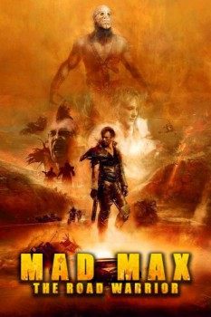

Country:Australia, 96 minutes
Spoken languages:English
Genres:Action, Thriller, Sci-Fi
Director(s):George Miller
Writer(s):Terry Hayes, George Miller, Brian Hannant
Video Codec:Unknown
Number: 1891

Certification:
Storyline:
Max Rockatansky returns as the heroic loner who drives the dusty roads of a postapocalyptic Australian Outback in an unending search for gasoline. Arrayed against him and the other scraggly defendants of a fuel-depot encampment are the bizarre warriors commanded by the charismatic Lord Humungus, a violent leader whose scruples are as barren as the surrounding landscape.
Cast:
Mel Gibson (as Max Rockatansky), Bruce Spence (as The Gyro Captain), Michael Preston (as Pappagallo), Max Phipps (as The Toadie), Vernon Wells (as Wez)
Medium: Media file,
Location: D:\Mad Max\Mad Max 2 The Road Warrior (1981)\Mad.Max.2.The.Road.Warrior.1980.720p.BRrip.x264.YIFY.mp4
Loaned: No
Aspect ratio: Unknown